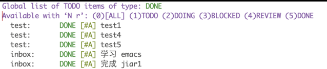
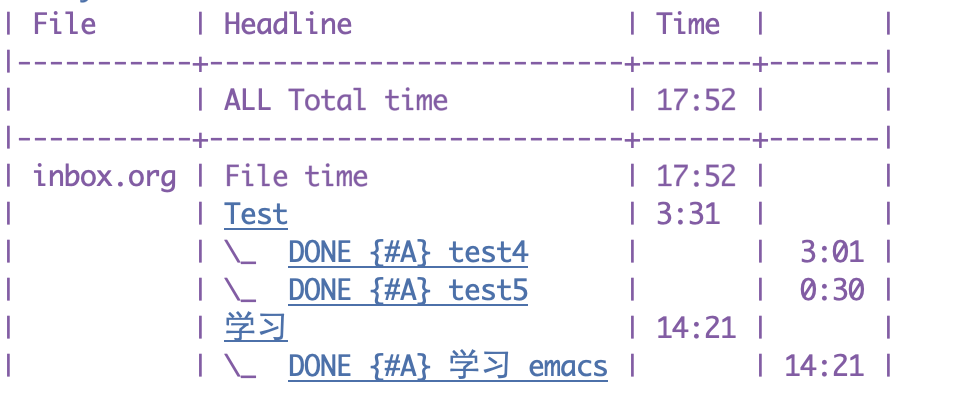
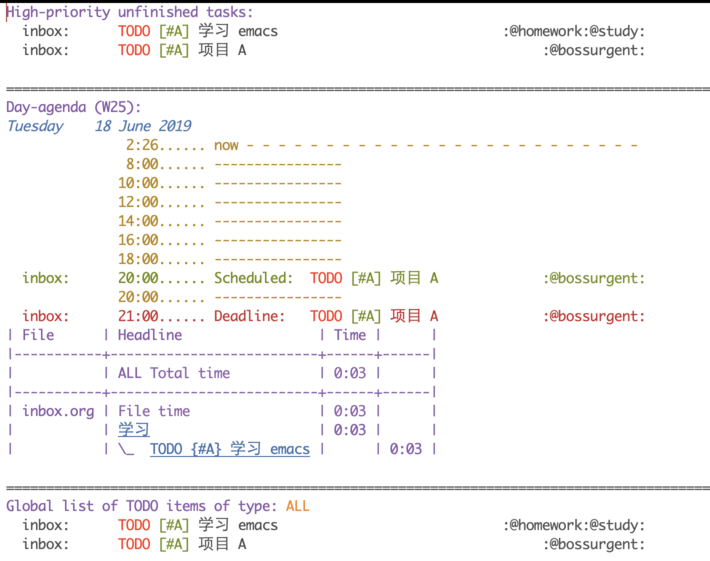
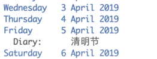
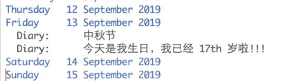
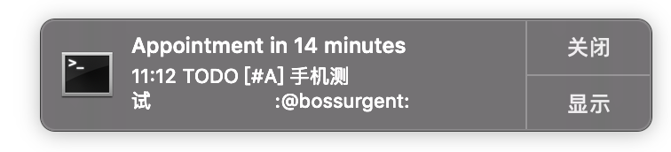

GTD 实践方法
Table of Contents
GTD 理论
关于 GTD 的理论网上有很多介绍，这里不过多解释，下面列一些参考文献和资料。
- <待补充>
它的理论和愿景看起来是很美好，但是真正实践起来却又非常困难。使用它的目的无非是为了高效的利用时间，同时把事情很好的完成。也就是说把大脑中的想法，通过这样一个理论的东西帮助记录和安排，从而把我们的大脑从这些细节中解放出来。就像是有一个私人秘书，帮我们安排好了各种计划，我们只需要依次执行就可以了。
它的真正实施，需要我们能够及时的 review，包括每天、每周、每月。 本文中讨论的 GTD 实践是限定在 Org mode 下的，通过自定义配置可以实现非常复杂的功能，基本能够满足我们的各种需求。
工作流
下面对工作流程做一个基本介绍，不要太关注细节如何做的，先了解如何去用。 如果某个快捷键不能使用是因为要事先定义。
- 通常在使用中，我们要添加（capture）一个任务或者理解为一个事件。这一步，通常按快捷键
C-c c,然后会让你选择一个 capture 模版。添加事件标题，并且如果需要设置一个 schedule(按C-c C-s，deadline 可以按C-c C-d), 同时在 title 上按S-<up>（Shift+下箭头）或者S-<down>可以添加优先级。默认一个 keyword，例如可以设置为TODO或者Meeting等等。最后使用C-c C-w添加事件到配置的文件中。 查看经过了第一步的操作，如果我们想看下不同状态的任务都有哪些。可以按
C-c a t，这是列出的所有TODO事件的列表。如果想看其他的，可以输入当前页面的状态对应的数字 + r。例如下图，列出所有DONE按5 r即可。
agenda view。按
C-c a a进入到 agenda view 中，它可以按照日、星期、 月、年列出 capture 的事件（添加过 schedule 或者 deadline 的才会显示）。通过按d或w来切换当前日和星期视图，month 可以直接执行命令org-agenda-month-view来查看。同时在该 agenda 界面下,如果在一个事件上按I, 自动开始一个事件（也就是 clock in， 并自动进入 DOING 状态），同样如果按O会进入DONE状态（同时也会 clock out）。这时我们就可以通过 clock report 来查看 day/week/month 的项目用时了。如下所示：
为了显示该试图，需要执行
org-agenda-clockreport-mode。- 添加 tag。进入到事件的 refile 文件，例如我的是 index.org，在当前标题上执行
C-c C-c然后按 tag 的快捷键(或者再按下 C-c, 手动选择)。 添加 tag 后，可以通过C-c a s来搜索。 使用 org-agenda-custom-commands 自定义显示。例如如下视图：

首先显示优先级为 A 且没有完成的项目，然后是 day-agenda, 最后是所有的 TODO 项目。
- inline archive
如果一个项目下的子项目完成了可以设置其为 inline archive, 按
C-c C-x a
基本的配置
配置代码
;; 定义 org-capture 快捷键为 C-c c
(define-key global-map "\C-cc" 'org-capture)
;; 定义 agenda 文件的位置
(setq org-agenda-files '("~/gtd/inbox.org"))
(defun org-summary-todo (n-done n-not-done)
"Switch entry to DONE when all subentries are done, to TODO otherwise."
(let (org-log-done org-log-states) ; turn off logging
(org-todo (if (= n-not-done 0) "DONE" "TODO"))))
(add-hook 'org-after-todo-statistics-hook 'org-summary-todo)
;; 设置关键字的字体颜色
(setq org-todo-keyword-faces
(quote (("TODO" :foreground "red" :weight bold)
("DONE" :foreground "forest green" :weight bold)
("DOING" :foreground "yellow" :weight bold)
("BLOCKED" :foreground "red" :weight bold)
("REVIEW" :foreground "orange" :weight bold)
)))
;; Then each time you turn an entry from a TODO (not-done) state into any of the DONE
;; states, a line ‘CLOSED: [timestamp]’ will be inserted just after the headline.
(setq org-log-done 'time)
;; Change task state to STARTED when clocking in
(setq org-clock-in-switch-to-state "DOING")
(setq org-clock-out-switch-to-state "DONE")
;; tags
(setq org-tag-alist '(("@work" . ?w) ("@home" . ?h)
("@buy" . ?b)
("@bossurgent" . ?u)
("@study" . ?s)))
(setq org-capture-templates '(("t" "Todo [inbox]" entry
(file+headline "~/gtd/inbox.org" "Tasks")
"* TODO %i%?")
))
;; 设置生日
;; In order to include entries from the Emacs diary into Org mode's agenda
(setq org-agenda-include-diary t
diary-file (locate-user-emacs-file "~/gtd/diary.org")
org-agenda-diary-file 'diary-file)
;; diary for chinese birthday
;; https://emacs-china.org/t/topic/2119/14
(defun my--diary-chinese-anniversary (lunar-month lunar-day &optional year mark)
(if year
(let* ((d-date (diary-make-date lunar-month lunar-day year))
(a-date (calendar-absolute-from-gregorian d-date))
(c-date (calendar-chinese-from-absolute a-date))
(cycle (car c-date))
(yy (cadr c-date))
(y (+ (* 100 cycle) yy)))
(diary-chinese-anniversary lunar-month lunar-day y mark))
(diary-chinese-anniversary lunar-month lunar-day year mark)))
;; 中国节假日
(require 'cal-china-x)
(setq mark-holidays-in-calendar t)
(setq cal-china-x-important-holidays cal-china-x-chinese-holidays)
(setq cal-china-x-general-holidays '((holiday-lunar 1 15 "元宵节")))
(setq calendar-holidays
(append cal-china-x-important-holidays
cal-china-x-general-holidays
))
;; pomodoro 通知功能
(defun notify-osx (title message)
(call-process "terminal-notifier"
nil 0 nil
"-group" "Emacs"
"-title" title
"-message" message
;;"-sender" "org.gnu.Emacs"
"-activate" "oeg.gnu.Emacs"))
;; 任务提醒功能
;; https://emacs-china.org/t/org-agenda/232
(require 'appt)
(setq appt-time-msg-list nil) ;; clear existing appt list
(setq appt-display-interval '10) ;; warn every 5 minutes from t - appt-message-warning-time
(setq
appt-message-warning-time '20 ;; send first warning 15 minutes before appointment
appt-display-mode-line nil ;; don't show in the modeline
appt-display-format 'window) ;; pass warnings to the designated window function
(appt-activate 1) ;; activate appointment notification
(display-time) ;; activate time display
(org-agenda-to-appt) ;; generate the appt list from org agenda files on emacs launch
(run-at-time "24:01" 3600 'org-agenda-to-appt) ;; update appt list hourly
(add-hook 'org-finalize-agenda-hook 'org-agenda-to-appt) ;; update appt list on agenda view
(defun my-appt-display (min-to-app new-time msg)
(notify-osx
(format "Appointment in %s minutes" min-to-app) ;; passed to -title in terminal-notifier call
(format "%s" msg))) ;; passed to -message in terminal-notifier call
(setq appt-disp-window-function (function my-appt-display))
相关说明
diary 的格式类似如下，保存到 diary.org 文件中。注意结合上面的配置代码看下。
* 小明的生日（假设是阴历 1999 年 10 月初一） %%(my--diary-chinese-anniversary 1 10 1999) 今天是我生日，我已经 %d%s 岁啦!!!
进阶
下面列出的功能在上面的配置中都有涉及，可以实验一下。
中国农历
节假日、生日


事件提醒（弹出提醒框）, 类似如下效果：

番茄时间
在 task 上执行 org-pomodoro 命令，会自动开启一个番茄时间为 25 分钟。
移动端方案
现在在手机端的使用通过 beorg 和坚果云能够完美的解决。设置方法相对简单，如下：
- 坚果云中配置好，创建 gtd 文件夹，里面是同步的文件。
- 在 beorg 手机端，设置选择同步方案为
WebDAV, Org directory 为/org files extentions 为inbox.org(如果多个，仅仅设置一个.org)。 - 服务器地址：如果你完全按照上面步骤设置坚果云，那么你的坚果云服务器地址是：https://dav.jianguoyun.com/dav/gtd。其中 https://dav.jianguoyun.com/dav/[后缀名]， 后缀名也就是前面创建的要同步的文件夹名称(例如我的为 gtd)中创建的同步文件夹名称，并且文件夹名称是区分大小写的。账户名：就是你的坚果云账户名 密码：对应的密码。
在手机端 capture 的事件也能非常及时的同步到电脑上，现在体验非常完美。
beorg 还有一个非常好的功能是它支持可以通过写 Scheme 代码来实现一些高级设置，当然现在还不完善，支持的功能有限。简单的使用方法就是创建一个 init.org 文件，使用代码块来包裹一下。同时将该文件和 inbox.org 放置到同一个目录里。
常用快捷键
Org mode
| 命令 | 描述 |
|---|---|
| C-c C-s | 设置任务开始时间 |
| C-c C-d | 设置任务截止时间 |
| C-c C-t | 改变任务状态 |
| S-Up/Down | 设置任务优先级 [#A], [#B], [#C] |
| C-c C-x C-i | 开始任务计时 |
| C-c C-x C-o | 终止任务计时 |
| C-c [ | 将当前文件加入 Org-Agenda |
| C-c ] | 将当前文件从 Org-Agenda 移除 |
| C-c . |
org agenda view
| 命令 | 描述 |
|---|---|
| C-c | a 打开 Org-Agenda 视图选择页面 |
| C-c | a a 打开 Org-Agenda 视图， 任务根据日期列出 |
| C-v | 在 Org-Agenda 视图中， 选择其他显示方式 |
| I | 在 Org-Agenda 的任务条目上， 开始计时 |
| O | 在 Org-Agenda 的任务条目上， 终止计时 |
| T | add tags |
| t | 在 Org-Agenda 的任务条目上， 修改任务状态 |
| E | 显示 任务的详细内容 |
| F | 打开 Follow mode，也就是在 agenda view 界面上，光标所在的任务，会在 inbox 中自动定位。L 类似 |
| G | time-grid mode |
| H | 显示最近 3 个月的节假日 |
| b | 显示前一个 agenda，也就是如果当前是日，则显示前一日。如果是周，则显示前一周。其他类似。 |
| f | 和 b 同理 |
| l | log mode |
| N | next 任务 |
| P | previous 任务 |
| r | 刷新 agenda |
| R | clock mode, 显示耗时 |
| v | 要显示的内容，需要进一步现在 d w m y 等 |
| z | 在任务上添加 note |
Tag 和属性过滤视图
例子：
| tag key | 解释 |
|---|---|
| ‘work’： | 选择 tag ‘:work:’. |
| ‘work&boss’： | 选择 tag ‘:work:’ 和 ‘:boss:’. |
| ‘+work-boss’： | 选择 tag ‘:work:’, 忽略 tag ‘:boss:’. |
| ‘work|laptop’： | 选择 tag ‘:work:’ 或 ‘:laptop:’. |
| ‘work|laptop+night’： | 选择有 laptop 并且有 night 的 tag |